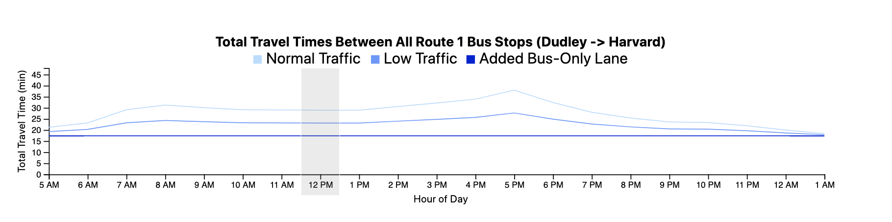
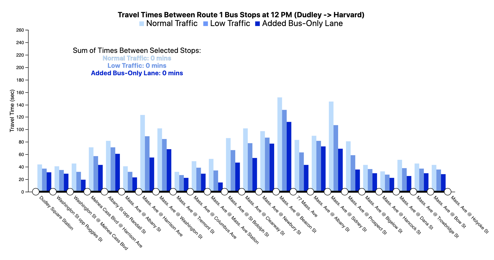
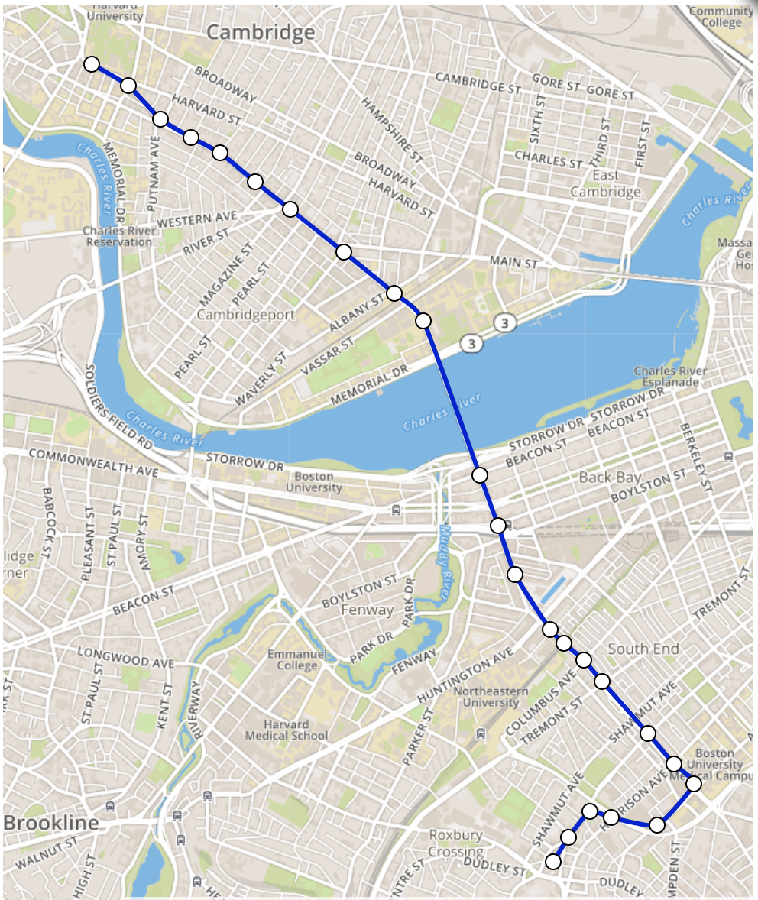
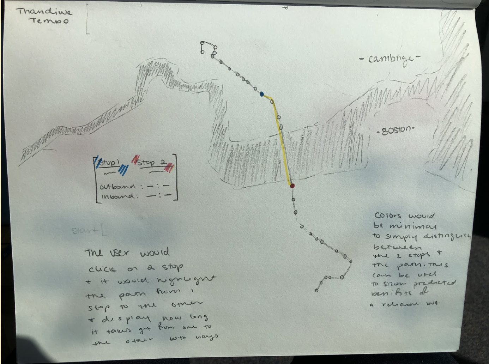
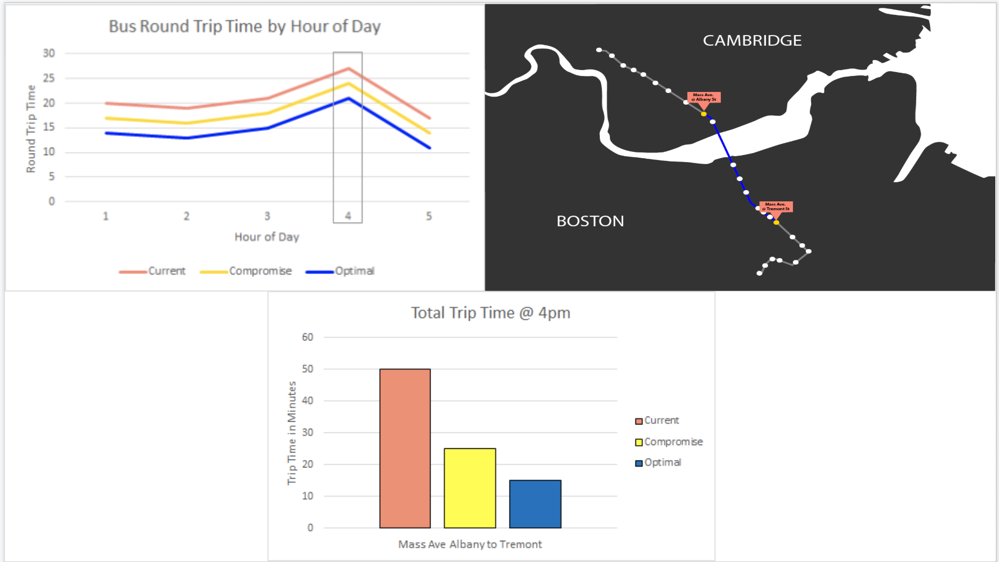
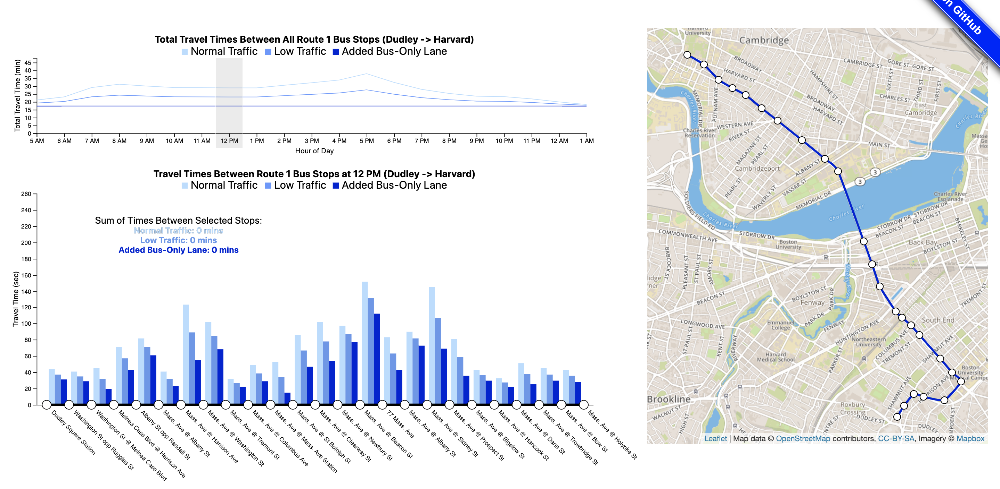

Justin Delano, Adam Poole, Thandiwe Tembo
Service-Learning Course Project as part of DS 4200: Information Presentation and Visualization, taught by Prof. Cody Dunne, Data Visualization @ Khoury, Northeastern University.
Our project aims to clearly measure and show the possible benefits of removing all of the possible delays from the bus route through the Chester Square Neighborhood. This project hopes to give the MBTA good reasons for why improvements in the bus routes are needed, as well as informing the residents of the neighborhood about how their daily lives would be affected. With these goals in mind, we hope to be able to ensure that all stakeholders of possible bus route improvements are informed about the reasons why an improvement project is necessary. One main goal is to specifically help the Chester Square Neighborhood Association convince other neighborhood associations to partner up to push for a bus improvement project. However, there is an additional goal of providing the neighborhood association evidence for a necessary change to bring to the relevant authorities. This will be accomplished through a series of interactive visualizations that focus on three different scenarios. A current scenario to show the delays now, a low traffic scenario to show the best case currently, and a bus-only lane scenario to show the benefits this brings. The main focus will be on how a separate bus lane throughout Route 1 will have the most benefit for the project stakeholders.
The main aspect of our visualizations are the three distinct delay timings shown. The Normal Traffic scenario what delays a person can expect on any average day. The Low Traffic aspect shows what delays a person can expect if they are fortunate enough to travel during times with lower than average traffic. Finally, the Added Bus-Only Lane aspect shows what a person can expect if there was a dedicated bus lane on Route 1.
The line chart allows for the user to explore the time of day where delays affect the user the most. A line chart was chosen as the idiom, because it easily shows how the delay level changes over time. This easily shows important information such as peaks in delays and allows for the interactive aspect of changing the time. The grouped bar chart allows for further exploration about where exactly the delays exist and where the most traffic is.
The grouped bar chart was selected because the length of the bars allows for differences to be clearly seen between the three scenarios. The map allows for the user to easily interact with our visualizations and select the stops most relevant to them. The selection of stops will then change the grouped bar chart to show the total additional delays one can expect when traveling between those stops.

The map allows for the user to add context throughout their exploration of the visualization, since most people do not know all the streets in Boston.
To learn more about the interactions between the visualizations click here.
We used two main spreadsheets as sources for our data. This first spreadsheet is called the "On Time Performance" sheet. The On Time Performance spreadsheet generally describes the on-time performance of different bus routes over time. We focused on the average on-time performance (or the average amount of times the bus worked on-time) of the bus route. The second spreadsheet is called the "Segment Level Delay Analysis" spreadsheet. The Segment Level Delay Analysis spreadsheet describes different run time data for the bus at different stops, such as the median run time and delays the bus faces. This data was collected through statistical measurements and a dedicated study. The “Segment Level Delay Analysis” spreadsheet uses ordinal, categorical, and quantitative data types. The “Ontime Performance” spreadsheet uses ordinal, categorical, and quantitative data types as well. For data preprocessing, we had to focus on the bus stops that we actually wanted and ensure that our data matched the order of stops. We also had to change the time format and the names of the bus stops so that they could be displayed easily on the axes of the grouped bar chart and the line chart. Finally, we had to ensure that the data only covered the northbound direction of the bus, which meant eliminating extra rows on the spreadsheets.
The primary function of our visualization is to allow users to discover more about the Route 1 bus, and its possible improvements. Our main task was to show the predicted benefits of a "reliable" bus, by showing comparisons between different traffic scenarios. Furthermore, we wanted to be able to have these visualizations be customizable, to allow users to select their own commutes on Route 1 and browse through the presented options to directly see the impact of a reliable bus personally. We had a secondary task of trying to determine which areas along the bus route were causing the most issues. For this, we wanted to the user to be able to clearly locate each bus stop, and discover which suffered from the largest delays. There was a third task, to show who was the main beneficiary of an added bus-only lane, but it became less of a focus as it was determined that it was more important to show that an added bus-only lane was beneficial for everyone who uses the Route 1 bus. However, exploration of this task was one of the reasons why we added a map, so that each individual user could have the context for if they lived close enough to the route for it to have an impact on their lives.
After exploring our data and thinking about the task analysis and user needs, our design process started with three sketches from each group member. These sketches varied greatly, but we found that our favorites were straightforward designs that clearly showed the benefit of the bus lane. We also agreed that a map of some sort with the route and bus stops shown was necessary for our final visualization.
We then moved onto combining our ideas into a prototype interactive design. This is where we decided on incorporating a map, a grouped bar chart, a basic bar chart, and a line chart.
After receiving feedback, we decided to change our color scheme to increase the clarity of our designs and improve the aesthetics. We also ensured that our designs would be clear if they were in black and white, and that colors could still be differentiated by the color blind. Further feedback from a user allowed us to refine our approach to emphasize the benefits that would come specifically from the bus lane. We then further refined our visualizations and decided that the basic bar chart was unnecessary and that the sum of times between selected stops could be easily displayed through details-on-demand or a separate area with text and changing numbers. To finish up, we tested with more users to determine that our text needed to be more readable and that our three scenarios needed to be renamed to be less confusing.
Overall, we have created three distinct visualizations that all work in conjunction to clearly outline the benefits for bus riders if a bus lane was constructed along Route 1. These visualizations also clearly show that in its current state, the Route 1 bus is unreliable and suffers from a lot of delays. Even the low traffic scenarios show that the bus is unreliable and delayed, and that an added bus-only lane provides a much more reliable and efficient experience. We hope that these visualizations can be used by the Chester Square Neighborhood Association to help gather support and convince authorities that an added bus lane is very beneficial. Our visualizations can always be improved in the future, and there are some ideas that we had that could not be implemented in time that could be helpful for the user. For example, we currently only have data for northbound riders, so including southbound data and a toggle switch for the map could be introduced to improve the usefulness of the visualizations. In the future, more data can always be collected to keep the visualization up to date if levels of traffic within the city change drastically. The visualization can also be updated with other bus routes to allow a user to see possible benefits to public transportation throughout the city.